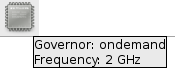
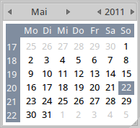
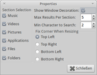
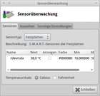
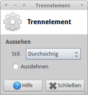
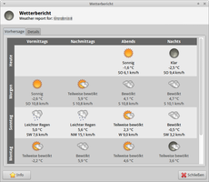
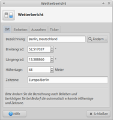

Xfce Panel Plugins
Dieser Artikel wurde für die folgenden Ubuntu-Versionen getestet:
Dieser Artikel ist größtenteils für alle Ubuntu-Versionen gültig.
Zum Verständnis dieses Artikels sind folgende Seiten hilfreich:
 Das Xfce Panel ist durch eine Reihe von Plugins
Das Xfce Panel ist durch eine Reihe von Plugins  erweiterbar. Einige davon sind so einfach bzw. selbsterklärend, dass man keine weiteren Informationen dafür benötigt. Andere Plugins haben mehr Funktionen, diese werden hier in alphabetischer Reihenfolge beschrieben. Die Einrichtung der Erweiterungen wird im Artikel Xfce Panel beschrieben.
erweiterbar. Einige davon sind so einfach bzw. selbsterklärend, dass man keine weiteren Informationen dafür benötigt. Andere Plugins haben mehr Funktionen, diese werden hier in alphabetischer Reihenfolge beschrieben. Die Einrichtung der Erweiterungen wird im Artikel Xfce Panel beschrieben.
Benutzerwechsel¶
Das Xfswitch Plugin rüstet die unter Xfce fehlende Möglichkeit des "schnellen Benutzerwechsels" nach. Voraussetzung sind die Displaymanager GDM oder LightDM, wobei letzterer unter Xubuntu bereits vorinstalliert ist und als Standard genutzt wird. Das folgende Paket muss installiert werden [1]:
xfswitch-plugin (universe)
 mit apturl
mit apturl
Paketliste zum Kopieren:
sudo apt-get install xfswitch-plugin
sudo aptitude install xfswitch-plugin
Die Einrichtung unterscheidet sich nicht von der anderer Erweiterungen. Allerdings wurde aus Xubuntu 14.04 der für eine korrekte Funktion notwendige Befehl gdmflexiserver entfernt (1320560). Bis dieser Fehler repariert ist, kann man mit einem kleinen Shell-Skript behelfen:
Mit Root-Rechten die Datei /usr/local/bin/gdmflexiserver anlegen [2]:
sudo touch /usr/local/bin/gdmflexiserver
Mit folgendem Inhalt füllen [3]:
#!/bin/sh # replacement for missing gdmflexiserver in Ubuntu 14.04 dm-tool switch-to-greeter
Datei ausführbar machen:
sudo chmod 755 /usr/local/bin/gdmflexiserver
Governor Plugin¶

Mit Hilfe des Governor Plugins ist es möglich, sich die Taktfrequenz der CPU anzeigen zu lassen. Enthalten ist das Plugin im Paket:
xfce4-cpufreq-plugin (universe)
mit apturl
Paketliste zum Kopieren:
sudo apt-get install xfce4-cpufreq-plugin
sudo aptitude install xfce4-cpufreq-plugin
Um die aktuelle Einstellung der CPU zu sehen, fährt man einfach den Mauszeiger über das Symbol des Plugins. Nach kurzer Zeit erscheint ein kleines Textfeld mit der aktuellen Frequenz und dem aktiven "Scaling Governor". Hat man einen Mehrkernprozessor, muss man für jeden Kern ein eigenes Plugin anlegen. Welchen Kern das jeweilige Plugin überwachen soll, kann man im "Eigenschaften" Dialog festlegen.
Weiterführende Informationen zu den Themen CPU-Frequenz, CPU-Governor und alternative Programme findet man im Artikel Prozessortaktung.
Datum¶

Die Erweiterung DateTime kann die vorhandene Uhr im Panel ersetzen, da sie neben der Uhrzeit auch das Datum und einen Kalender einblenden kann. Ein Klick mit der linken Maustaste ( ) auf die aktuelle Uhrzeit öffnet einen Kalender, welcher aber nicht den Funktionsumfang von Orage bietet. Das folgende Paket muss dafür installiert werden:
) auf die aktuelle Uhrzeit öffnet einen Kalender, welcher aber nicht den Funktionsumfang von Orage bietet. Das folgende Paket muss dafür installiert werden:
xfce4-datetime-plugin (universe)
mit apturl
Paketliste zum Kopieren:
sudo apt-get install xfce4-datetime-plugin
sudo aptitude install xfce4-datetime-plugin
Timer-Plugin¶
Wer ein Weckprogramm braucht und nicht auf externe Programme wie z.B. Alarm Clock ausweichen möchte, dem sei das Timer-Plugin für Xfce ans Herz gelegt [1].
xfce4-timer-plugin
mit apturl
Paketliste zum Kopieren:
sudo apt-get install xfce4-timer-plugin
sudo aptitude install xfce4-timer-plugin
Um einen Warnton abzuspielen, verwendet man z.B. folgenden Befehl:
paplay ~/Musik/alarm.mp3
Lesezeichen¶
Um auf bestimmte Ordner zuzugreifen, die immer wieder benötigt werden, wurde das Panel-Plugin Places entwickelt. Installiert wird es über das folgende Paket:
xfce4-places-plugin
mit apturl
Paketliste zum Kopieren:
sudo apt-get install xfce4-places-plugin
sudo aptitude install xfce4-places-plugin
Nachdem das Panel-Applet "Places"/"Orte" aktiviert wurde, können neue Lesezeichen per Drag&Drop hinzugefügt werden. Diese werden in der Datei ~/.config/gtk-3/bookmarks abgelegt (ältere Xfce-Version verwendeten ~/.gtk-bookmarks). Um die Datei manuell zu bearbeiten, einen Editor [3] öffnen und ein Lesezeichen nach folgendem Muster einfügen:
file:///home/BENUTZER/Downloads
Außerdem werden die benutzerdefinierten "Orte" (Lesezeichen bzw. Bookmarks) beim Dateimanagers Thunar (linke Spalte, aktivierbar mit "Anzeige -> Seitelleiste -> Lesezeichen") in dieser Datei gespeichert. Alternativ kann daher auch Thunar zum Hinzufügen/Entfernen der Lesezeichen genutzt werden.
Linelight¶

Linelight ist eine einfache Oberfläche für das Panel von Xfce, welches auf locate setzt. Die Suchergebnisse können nach den Kriterien Musik, Videos, Bilder et cetera gefiltert und direkt über einen Doppelklick in der damit verknüpften Anwendung ausgeführt werden. Das folgende Paket muss dafür installiert werden:
xfce4-linelight-plugin (universe)
mit apturl
Paketliste zum Kopieren:
sudo apt-get install xfce4-linelight-plugin
sudo aptitude install xfce4-linelight-plugin
Mail Watcher¶
Der Mail-Watcher kann periodisch Mailkonten überprüfen und gibt, sobald ein neue Mail eingetroffen ist, eine entsprechende Benachrichtigung aus. Das Plugin unterstützt folgende Mailboxen: (S)POP3, (S)IMAP, Google Mail, Maildir, MH Maildir und MBox.
Zum Konfigurieren klickt man - wie bei allen Plugins - mit der rechten Maustaste ( ) auf das Plugin und wählt "Eigenschaften". Über einen Klick auf "Hinzufügen" kann man ein neues, zu überwachendes E-Mail Konto anlegen. Je nach Kontoart (POP3, IMAP, etc.) muss man bestimmte Angaben wie Benutzername, POP3-Adresse usw. machen, welche für die Kontoabfrage notwendig sind. Außerdem kann hier auch das Abfrageintervall in Minuten festgelegt werden. Weiterhin kann man hier festlegen, ob bei einer neuen E-Mail automatisch ein Programm gestartet werden soll, z.B. das reguläre E-Mail Programm.
) auf das Plugin und wählt "Eigenschaften". Über einen Klick auf "Hinzufügen" kann man ein neues, zu überwachendes E-Mail Konto anlegen. Je nach Kontoart (POP3, IMAP, etc.) muss man bestimmte Angaben wie Benutzername, POP3-Adresse usw. machen, welche für die Kontoabfrage notwendig sind. Außerdem kann hier auch das Abfrageintervall in Minuten festgelegt werden. Weiterhin kann man hier festlegen, ob bei einer neuen E-Mail automatisch ein Programm gestartet werden soll, z.B. das reguläre E-Mail Programm.
| Mail Watcher | |
| Symbole | Beschreibung |
| keine neue E-Mail | |
| neue E-Mail vorhanden | |
Sind neue Mails vorhanden, fährt man einfach mit dem Mauszeiger über das Symbol des Plugins, dann wird in einem Textfeld angezeigt, in welcher Mailbox wie viele neue Mails liegen.
Notizen¶
Der Notizblock ist ein Plugin, mit dem man sich einfach Notizen machen kann. Es handelt sich hierbei um wirklich einfache Notizen, die keinerlei weitere Textformatierungen, Links oder ähnliches zulassen. Über
Strg +
M kann man zwar ein Optionsmenü aufrufen, was unter anderem auch die Änderung der Schrift zulässt, dies wirkt sich aber immer auf alle Notizen aus.
Um einen Text hinzuzufügen, tippt man einfach in das Notizfeld. Möchte man eine weitere Notiz hinzufügen, klickt man auf das + in der Fensterleiste oder drückt ⇧ + Strg + N . Möchte man eine Notiz löschen, so klickt man entweder auf das - in der Fensterleiste oder drückt Strg + Q .
Das Plugin speichert alle Notizen als einzelne Textdateien, die man im Verzeichnis ~/.local/share/notes/Notes findet.
Sensoren¶

Eine Überwachung der erkannten Sensorwerte wie z.B. Systemtemperatur oder Akkuleistung liefert Sensors . Um die Sensorüberwachung nutzen zu können, installiert man:
xfce4-sensors-plugin (universe )
mit apturl
Paketliste zum Kopieren:
sudo apt-get install xfce4-sensors-plugin
sudo aptitude install xfce4-sensors-plugin
Nachdem die Erweiterung hinzugefügt wurde, einen Rechtsklick darauf ausführen und "Eigenschaften" auswählen. Hier den Sensortyp sowie die zu überwachenden Prozesse aktivieren. In den anderen Reitern können Einstellungen zur Anzeige vorgenommen werden. Werden keine Sensoren gefunden, hilft der Artikel Lm sensors weiter.
Smart Bookmark¶
Smart Bookmark ist ein kleines Plugin, mit dem man einen schnellen Zugriff auf bestimmte Webseiten bzw. Unterseiten hat.
Dazu muss man Smart Bookmark zuerst auf die gewünschte Seite konfigurieren. Will man z.B. Schnellzugriff auf die Unterseiten des Ubuntuusers.de Wikis haben, klickt man zuerst mit Rechts auf das installierte Plugin (aber nicht in das Textfeld!) und wählt "Eigenschaften". Unter "URL" trägt man die gewünschte URL ein, im Falle des Wikis also wiki.ubuntuusers.de. Das Label kann man optional setzen, es hat auf die Funktion von Smart Bookmark keinen Einfluss.
Tippt man nun in das Eingabefeld von Smart Bookmark z.B. Xfce Panel und drückt
⏎ , so startet der Browser und lädt die Seite http://wiki.ubuntuusers.de/Xfce_Panel.
Starter¶
Ein Starter gestattet es, neben dem direkten Programmaufruf auch Ordner anzeigen zu lassen. Hier wird als Beispiel der Dateimanager Thunar mit dem vorgegebenen Pfad gestartet:
Name:
aussagekräftiger TitelBezeichnung:
KurzbeschreibungBefehl:
thunar /media/disk/
Den Befehl thunar /media/disk/ entsprechend anpassen und ggfs. noch ein Symbol auswählen.
Trennlinie / Abstand¶

Um eine vorhandene Trennlinie bzw. einen Abstand zu bearbeiten, führt man einen Rechtsklick auf diese aus und wählt "Eigenschaften" aus. Im Menü "Trennelement" den gewünschten Stil auswählen und mit "Schließen" die Bearbeitung sichern.
Der Menüpunkt "Ausdehnen" bewirkt, dass der freie Platz auf der Leiste komplett durch das Trennelement beansprucht wird. Dadurch werden Infoplugins an den rechten Rand verschoben, wenn ein Trennelement davor eingefügt wurde.
Verve Kommandozeile¶
Die Verve-Kommandozeile besteht nur aus einem sehr unauffälligen Texteingabefeld, welches aber vielfältige Funktionen hat.
Zum einem kann es als Anwendungsstarter dienen. Dazu trägt man einfach den Namen des zu startenden Programms (genau genommen den Startbefehl) ein und drückt
⏎ . Dann startet das Programm. Dies funktioniert auch prinzipiell mit Shellbefehlen, allerdings muss man hier
⏎ +
Strg drücken, damit der Befehl in einer Shell gestartet wird. Zu bedenken ist nur, dass die Shell nach der Befehlsausführung direkt wieder geschlossen wird. D.h. Shellbefehle, die "nur" eine Ausgabe produzieren (z.B. ls -la) und dann fertig sind, sind nicht geeignet. Besser sind Befehle wie z.B. top, die eine permanente Ausgabe erzeugen.
Genauso wie z.B. die Bash beherrscht auch die Verve-Kommandozeile Auto-Vervollständigung, d.h. wenn man ein paar Buchstaben eingetippt hat und dann Tab ⇆ drückt, wird der Befehl automatisch vervollständigt. Gibt es mehrere Möglichkeiten, so kann man diese durch wiederholtes Drücken von Tab ⇆ anzeigen lassen.
Verve kann aber noch mehr: tippt man in das Eingabefeld eine Internet-Adresse (URL) ein, so öffnet sich automatisch der Browser und die Seite wird darin geladen. Wichtig ist dabei, dass man der Webadresse immer http:// voranstellt, sonst erkennt Verve die Eingabe nicht als Internet-Adresse.
Ähnlich verhält es sich mit E-Mail-Adressen. Tippt man diese in die Eingabezeile ein, wird automatisch der E-Mail Client gestartet und die eingegebene Mail-Adresse steht als Empfänger bereits in der zu schreibenden E-Mail.
Wetter-Plugin¶
Hinweis:
Ab Mai 2017 wird für eine korrekte Funktion die Version 0.8.9 oder neuer des Pakets xfce4-weather-plugin benötigt (siehe auch 1688056 ).
Mit Xfce 4.10 wurde das Wetter-Plugin im Jahr 2012 komplett überarbeitet. Die Wetterdaten stammen nun vom Meteorologisk institutt aus Norwegen. Die Standortwahl erfolgt nicht mehr über GMXX-Codes, sondern ausschließlich umgangssprachlich über eine Ortssuche mit anschließender Auswahl des gewünschten Orts. Das Symbol im Benachrichtigungsfeld liefert beim Überfahren mit dem Mauszeiger detailliertere Daten, ein Linksklick zeigt die Vorhersage.
|  |
| Wetterbericht |
|  |
| Einstellungen |
Whisker Menu¶
 Ein alternatives Startmenü für Xfce bietet Whisker Menu. Ab Xubuntu 14.04 ist es bereits vorinstalliert und ersetzt das klassische Xfce-Menü.
Ein alternatives Startmenü für Xfce bietet Whisker Menu. Ab Xubuntu 14.04 ist es bereits vorinstalliert und ersetzt das klassische Xfce-Menü.
 Übersichtsartikel
Übersichtsartikel- Erstellt mit Inyoka
-
 2004 – 2017 ubuntuusers.de • Einige Rechte vorbehalten
2004 – 2017 ubuntuusers.de • Einige Rechte vorbehalten
Lizenz • Kontakt • Datenschutz • Impressum • Serverstatus -
Serverhousing gespendet von